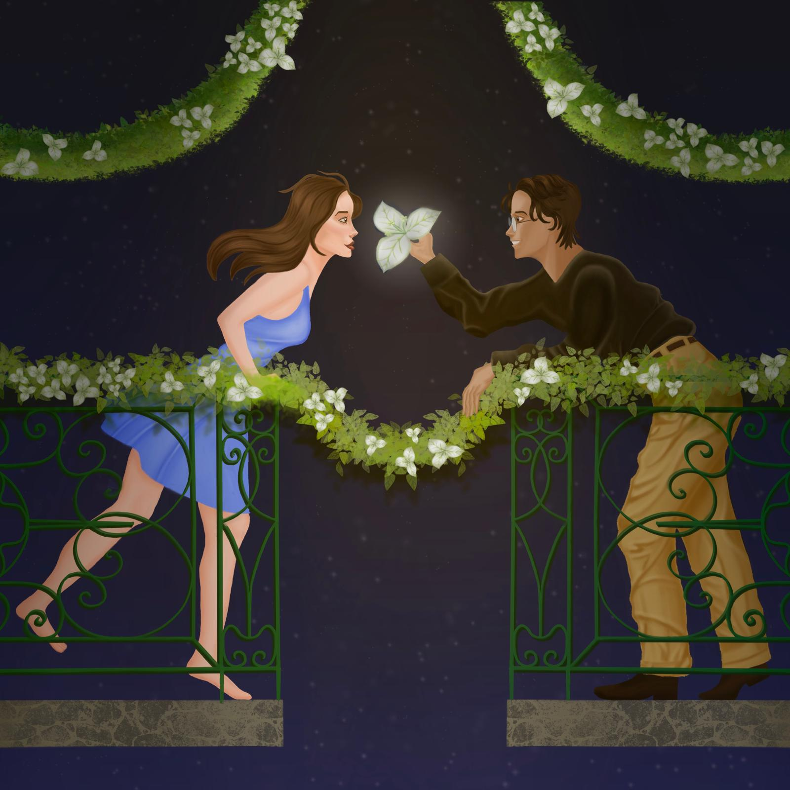

BACK TO PROJECTS


PROJECT 2

Bougainvilleas
STATEMENT
An illustration responding to a Mensagem de Lisboa article about neighbors in Lisbon who began planting bougainvilleas in the street, and, in doing so, started talking to each other. What began with one architect and a single flower grew into a shared act — the kind that turns a street into a community.
The piece captures that spirit as a meeting in the night: two people on opposite sides of a balcony, reaching toward each other through the glow of a flower. The balcony as the threshold between private and shared life. The gesture as the article's quiet argument: that a city becomes a neighborhood the moment someone leans over the railing.
PROCESS